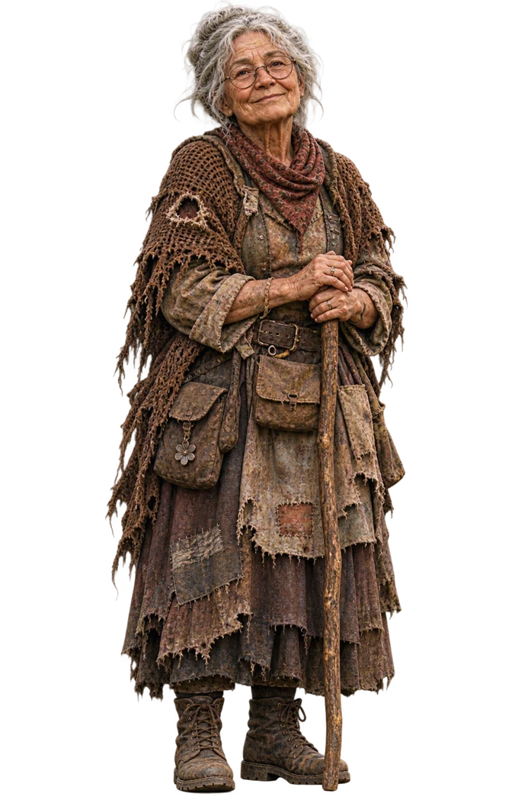
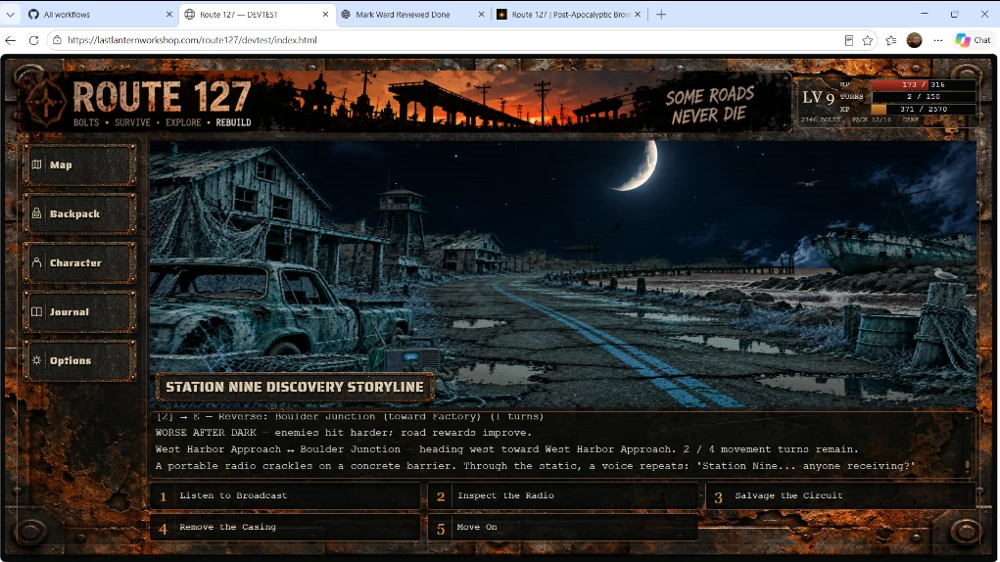
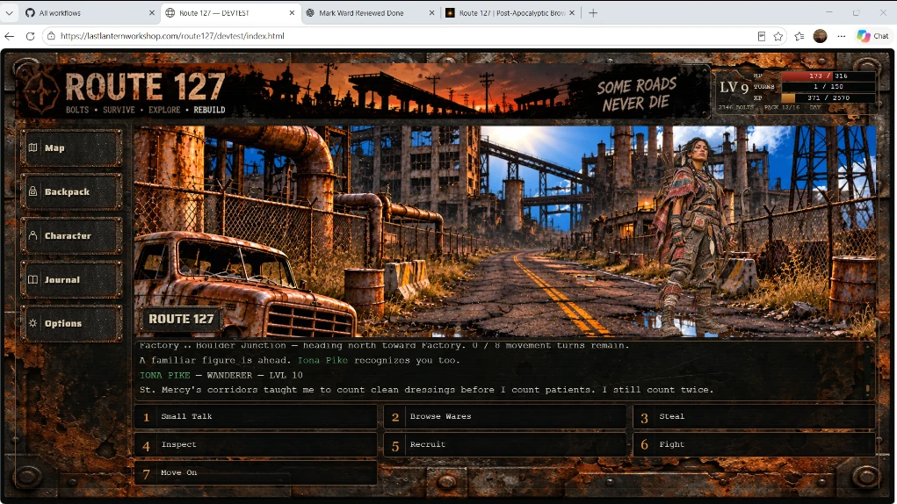
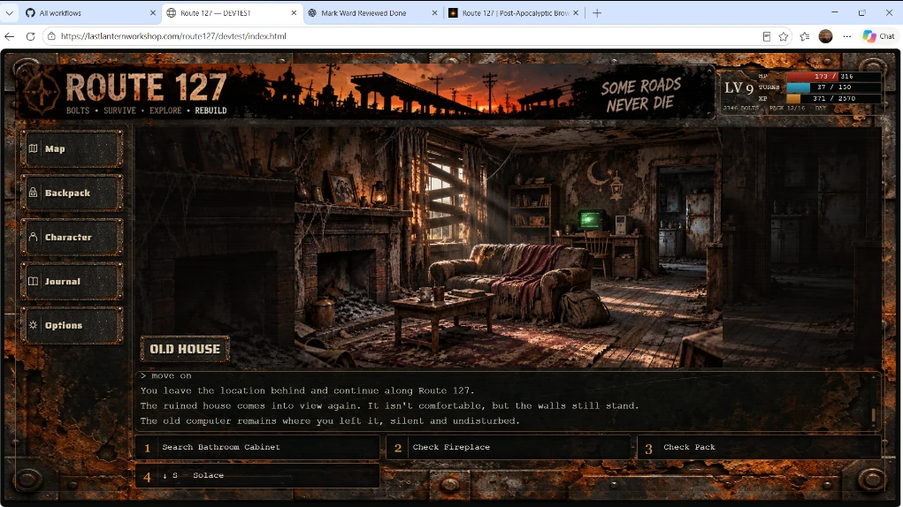
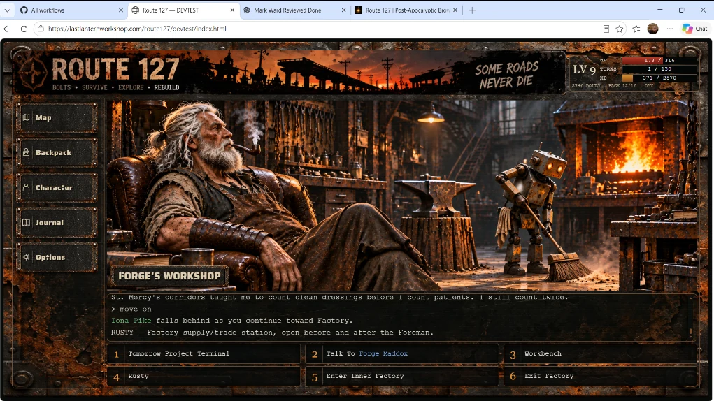
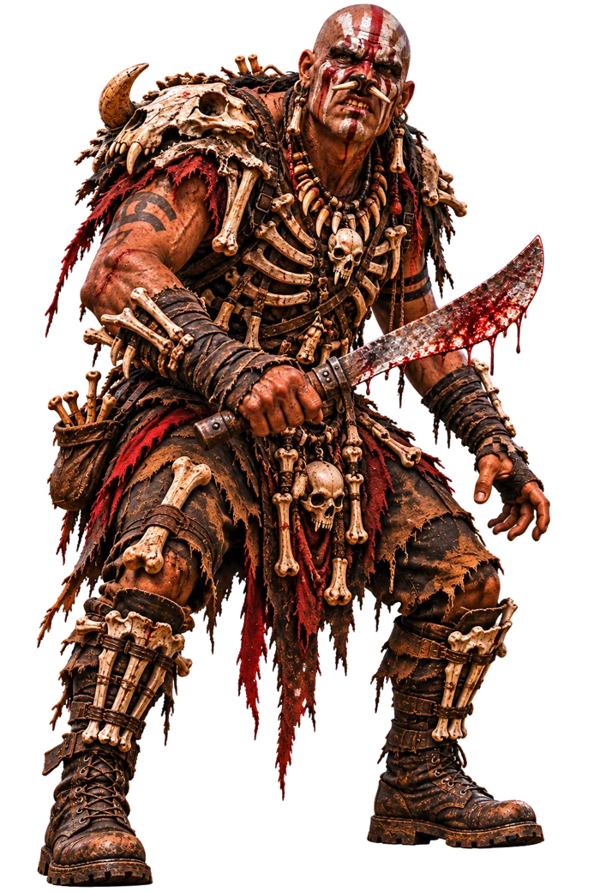
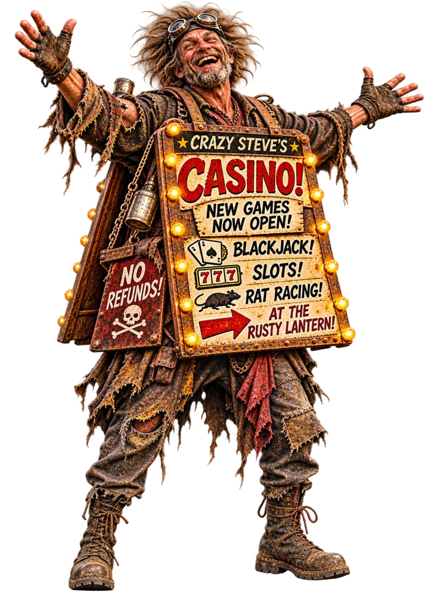
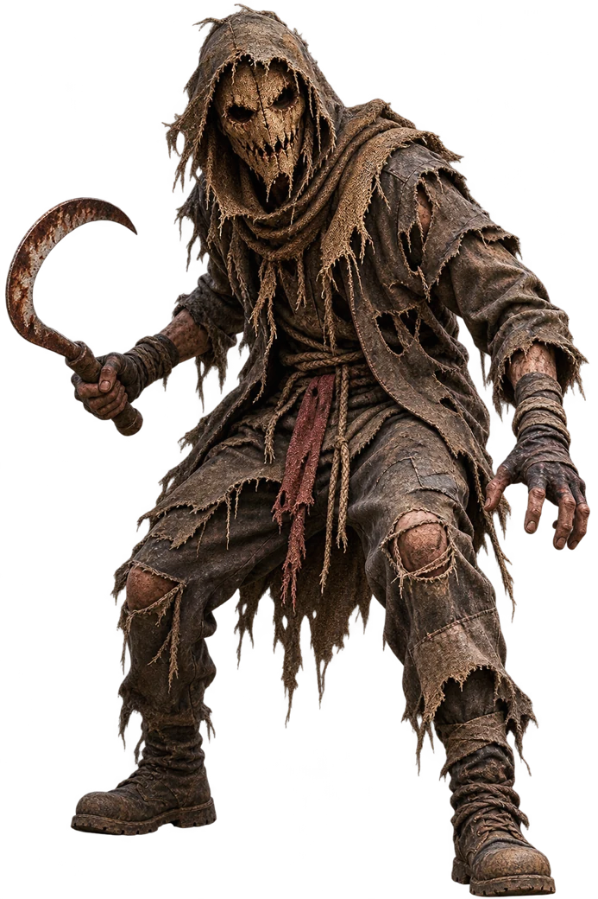

01 // WorkbenchesReal-Time Crafting
Scavenge materials and craft equipment at wasteland workbenches. Crafting runs on real-time timers, and success isn't guaranteed.
THE ROAD REMEMBERS.
THE WASTELAND DOESN'T FORGIVE.
Civilization is gone. The roads are dangerous. Every stranger has a story, and every decision has a cost. Route 127 brings the spirit of classic BBS door games into a persistent, post-apocalyptic world built around exploration, survival, and the choices you make.
☕ Enjoying the wasteland? Support the Workshop ↗Every road has a story. Four moments from the public playtest, captured in the actual game interface. Select a scene to see it full size.




More than a retro terminal. Build, bargain, gamble, fight, or earn a reputation nobody can ignore. These are the gameplay systems shaping the journey.

01 // WorkbenchesScavenge materials and craft equipment at wasteland workbenches. Crafting runs on real-time timers, and success isn't guaranteed.
Assault, murder, and theft carry consequences. Build a bounty, pay your dues, and chase a place on the Most Wanted or all-time Most Notorious boards.
Encounter named travelers with possessions of their own. Talk, trade, steal, or fight. What happens on the road can change what you find next time.
Experience Route 127 through richly illustrated Full Graphics or return to its roots with Classic BBS mode. Switch between both interfaces whenever you want.

05 // SurvivalScavenge equipment, upgrade your survivor, and battle dangerous enemies across the wasteland. Discover increasingly powerful gear, develop your character, and take on challenging bosses.

06 // Off DutyRisk your Bolts on dice, blackjack, slots, and other games between expeditions. Sometimes the biggest gamble isn't out on the road.

07 // Every Step CountsMake your daily turns count as you travel between settlements, scavenge, and face unpredictable encounters along the highway.
Fight to free a settlement from the gangs controlling it. Complete quests, confront dangerous enemies, and help the survivors reclaim their home.
Your journey doesn't have to end when you close your browser. Sign in to save your character and continue your adventures across supported devices.
The wasteland is being built for more than one survivor. Future asynchronous multiplayer features will let players leave their mark on a shared world without needing to be online at the same time.
Route 127 is an active work in progress. Features and presentation may change during development. Enter the wasteland through the public playtest and see how far the road takes you.
← Back to the Workshop